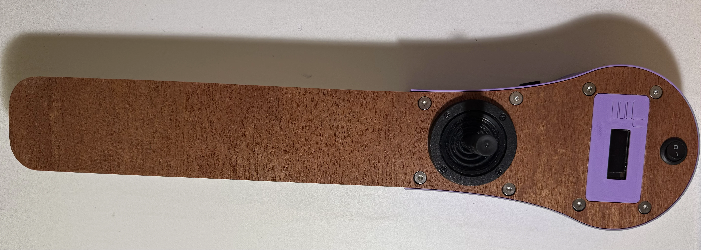

Guide d'assemblage du joystick connecté
Ce guide vous explique comment assembler le joystick connecté à partir des composants électroniques, des
pièces imprimées en 3D et des pièces en contreplaqué de 5mm qui sont listées
dans la liste du matériel nécessaire (BOM).

Les références pour acheter les composants sont données à titre indicatif. Il est tout à
fait possible de les acheter ailleurs.
Il est cependant impératif de commander les mêmes éléments pour pouvoir utiliser le
code source, les plans de découpe bois et de 3D proposés.
Si vous souhaitez utiliser d'autres composants, il faudra modéliser un autre boîtier.
De même si vous souhaitez utiliser une autre carte arduino (il faut qu'elle soit Bluetooth LE), il faudra
modifier le code source.
L'architecture du code source est modulaire et permet d'utiliser une aure carte, sous réserve de fournir
le code adéquat.
Matériel requis
Composants électroniques principaux
1 carte Feather M0 Bluefruit ou nRF52840 Express de chez Adafruit
Carte de développement arduino avec connectivité Bluetooth Low Energy, au format Adafruit
Feather.
Commandez avec des broches empilables longues (qu'il faudra souder dessus):
Voir sur Adafruit
Il faudra avoir téléchargé le code fourni (dans le repo) sur la carte, avant de monter l'ensemble.
1 écran OLED 128x32 FeatherWing (assemblé)
Affichage pour les informations système et la navigation.
La version assemblée a déjà les
broches soudées.
1 Joystick analogique JH-D202X-R4
Bien choisir la version R4 qui est en 10k Ohms, pas la R2 (5k Ohms)
1 Batterie Lipo 3,7V en 1000 ou 12000 mAh avec connecteur JST-PH
Pour alimenter l'ensemble, à commander par exemple sur Adafruit Prendre au maximum un 1200 mAh pour ce que la rentre dans le boîtier proposé.
Impression du boîtier et découpage des parties en bois
La partie bois va servir de support aux composants électroniques et à la coque en 3D.
Téléchargez les fichiers STL / DXF nécessaires.
Assurez-vous d'imprimer et de découper/poncer/vernir toutes les pièces nécessaires avant de commencer l'assemblage.
Préparation des cartes électroniques
Étape 1 : Soudure des broches
Commencez par souder les broches sur les différentes cartes pour pouvoir les empiler.
Attention : Faites attention au sens des cartes. Il y a un côté avec moins de broches. Assurez-vous de bien repérer ce côté sur la proto shield.
Voici les cartes avec leurs broches avant soudure :

Feather M0 avec broches

Proto shield avec broches

Écran TFT avec broches
Astuce : Pour souder les broches bien parallèles, retournez la carte avec les broches en place, et utilisez de la patafix pour éviter qu'elles ne bougent pendant la soudure.

Étape 2 : Empilement des cartes
Une fois les broches soudées, vous pouvez empiler les cartes dans l'ordre suivant (de bas en haut) :
- La proto shield (en bas)
- La Feather M0
- L'écran TFT (en haut)

Feather M0 soudée

Vue de côté de l'empilage

Empilage partiel

Empilage complet
De bas en haut: la proto shield, puis la Feather M0, la SD shield, et la TFT.
Installation de la connectique
Nous allons maintenant connecter les prises jack stéréo et le connecteur DB9 à la proto shield.
Connexion du DB9
Le connecteur DB9 permet de brancher un joystick ou d'autres périphériques à plusieurs entrées.
Pour le câblage du DB9, vous aurez besoin de :
- 4 fils de couleurs différentes pour deux caneaux analogiques (par exemple : les axes vertical et horizontal d'un joystick)
- 1 fil noir pour la masse (GND)
- 4 fils pour 4 contacteurs (par exemple : bouton d'un joystick)

Suivez le schéma de câblage ci-dessous pour connecter le DB9 à la proto shield :

Montage final
Une fois toutes les connexions effectuées, vous pouvez procéder au montage final dans le boîtier imprimé en 3D.
- Placez les cartes empilées dans la partie inférieure du boîtier
- Fixez les cartes avec les vis fournies
- Installez les connecteurs jack et DB9 dans leurs emplacements respectifs
- Si vous utilisez une batterie, installez-la dans le compartiment prévu à cet effet
- Fermez le boîtier avec la partie supérieure
- Vissez les deux parties du boîtier ensemble

Vue du boîtier fermé

Vue du connecteur DB9
Votre BaahBox est maintenant assemblée. Vous pouvez passer à l'installation de l'application et à la configuration de l'application.
Pour installer l'application et configurer votre BaahBox, consultez le manuel d'utilisation.